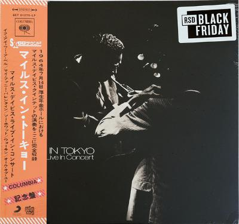

Miles Davis - Miles In Tokyo (Miles Davis Live In Concert)

Discogs
Description
| Label | Get On Down, Get On Down, Columbia, Columbia, Sony Music Commercial Music Group, Sony Music Commercial Music Group |
| Catalog number | GET51279-LP, 19075984811, GET51279-LP, 19075984811, GET51279-LP, 19075984811 |
| Format | Vinyl, LP, Album, Record Store Day, Limited Edition, Reissue, Stereo |
| Released | 2019 |
| Original release date | 1969 |
| Genre | Jazz |
| Style | xxxx |
Tracklist
| Position | Title |
|---|---|
| A1 | If I Were A Bell |
| A2 | My Funny Valentine |
| B1 | So What |
| B2 | Walkin' |
| B3 | All Of You |
Credits
| Role | Name |
|---|---|
| Artwork [Reissue Art Supervision] | Alfredo Rico-Dimas |
| Bass | Ron Carter |
| Drums | Anthony Williams |
| Layout [Reissue], Restoration | Slade Anderson |
| Piano | Herbie Hancock |
| Tenor Saxophone | Sam Rivers |
| Trumpet | Miles Davis |